É fácil olhar para o mundo de hoje e chamá-lo de normal.
Como se os continentes sempre tivessem estado aqui.
Como se este clima fosse permanente.
Como se nós tivéssemos chegado ao resultado final.
A natureza raramente trabalha com resultados finais.
 Ischigualasto · paisagem atual
Ischigualasto · paisagem atualSAN JUAN · ARGENTINA · PRESENTE
Ischigualasto
Hoje, parece imóvel.
Rocha, poeira, erosão — uma paisagem que sugere permanência.
É uma boa ilusão.
As camadas expostas aqui registram fragmentos de um mundo muito mais antigo.
Não o mundo inteiro.
A geologia nunca é tão generosa.
Nota
A paisagem atual de Ischigualasto não é a paisagem do Triássico. O que vemos hoje resulta de milhões de anos de deposição, soterramento, transformação e erosão.
≈ 251,9 MILHÕES DE ANOS
O Triássico não começou do zero. Começou do que restou.
No fim do Permiano, a maior extinção em massa conhecida havia transformado profundamente a vida na Terra.
Os sobreviventes herdaram o planeta.
Isso não significa que herdaram estabilidade.
A vida continuou. Só não voltou ao que era.
Nota
A recuperação dos ecossistemas ocorreu em ritmos diferentes. O início do Triássico ainda foi marcado por fortes perturbações ambientais.
 Reconstrução paleogeográfica provisória
Reconstrução paleogeográfica provisóriaUM PLANETA DIFERENTE EXIGE OUTRO MAPA
Um continente. Não um único mundo.
A maior parte das terras emersas estava reunida em Pangeia.
No mapa, parece simples.
Na realidade, distâncias continentais enormes, circulação atmosférica e forte sazonalidade criavam condições muito diferentes entre regiões.
Unir os continentes nunca significou uniformizar a natureza.
Nota
Reconstrução paleogeográfica aproximada. Posições continentais são sustentadas por evidências geológicas e paleomagnéticas; costas, relevo e detalhes regionais envolvem reconstrução.
Seco não significa vazio.
Grandes regiões do interior de Pangeia experimentavam condições áridas ou semiáridas e forte sazonalidade.
Mas imaginar o Triássico como um deserto interminável seria conveniente demais.
Rios existiam. Chuvas chegavam. Planícies inundavam.
O ambiente mudava — às vezes depressa.
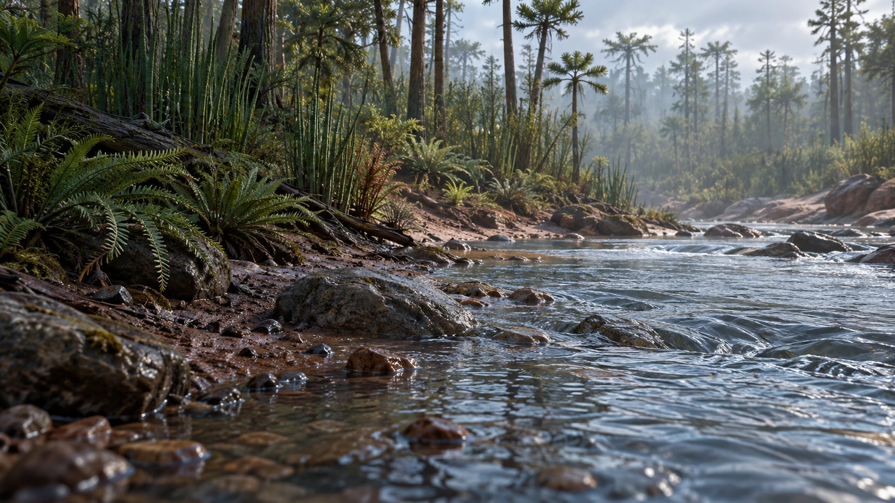
Água muda as regras. Mesmo quando não fica por muito tempo.
Rios e planícies de inundação alteravam a paisagem, transportavam sedimentos e criavam novas condições para a vida.
Uma região seca não precisava permanecer seca.
Um rio não precisava permanecer no mesmo lugar.
Estabilidade é uma ideia confortável. A geologia oferece poucas garantias.
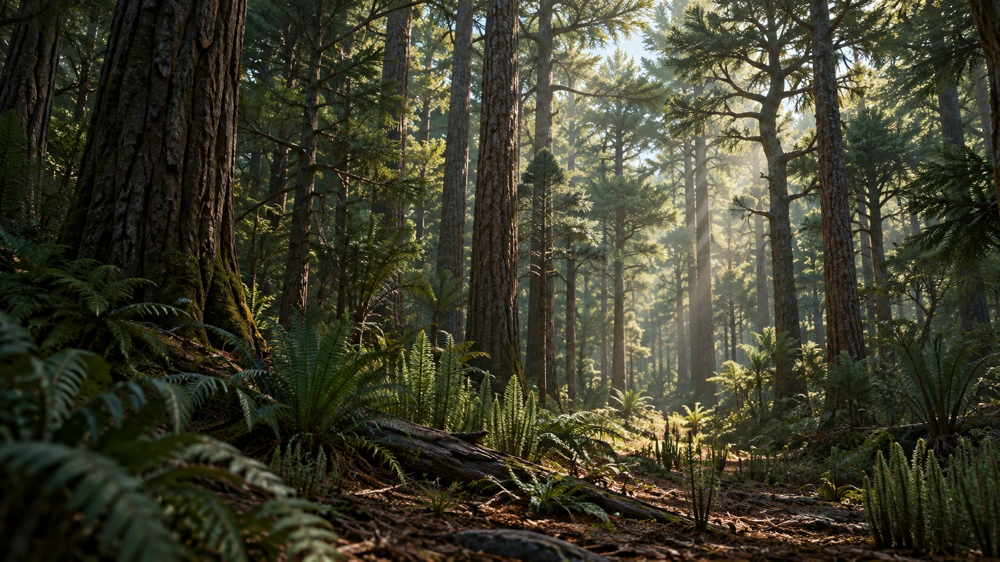
Pangeia nunca foi uma paisagem só.
Onde água, clima e solo permitiam, a vegetação respondia.
Regiões mais úmidas coexistiam com áreas abertas, sazonais e secas.
Tudo dentro do mesmo supercontinente.
A escala do mapa esconde essa variedade.
TRIÁSSICO SUPERIOR · HÁ CERCA DE 233 MILHÕES DE ANOS
Em algum momento, eles começaram.
Seria conveniente conhecer o primeiro dinossauro.
A espécie.
O lugar.
A data.
Não conhecemos.
Os registros seguros mais antigos datam de cerca de 233 milhões de anos.
Mas existe uma diferença importante entre o primeiro dinossauro que existiu e o primeiro que tivemos a sorte de encontrar.
Nota
O registro fóssil é incompleto. Os fósseis mais antigos conhecidos estabelecem uma idade mínima para a presença dos dinossauros — não o instante exato em que o grupo surgiu.

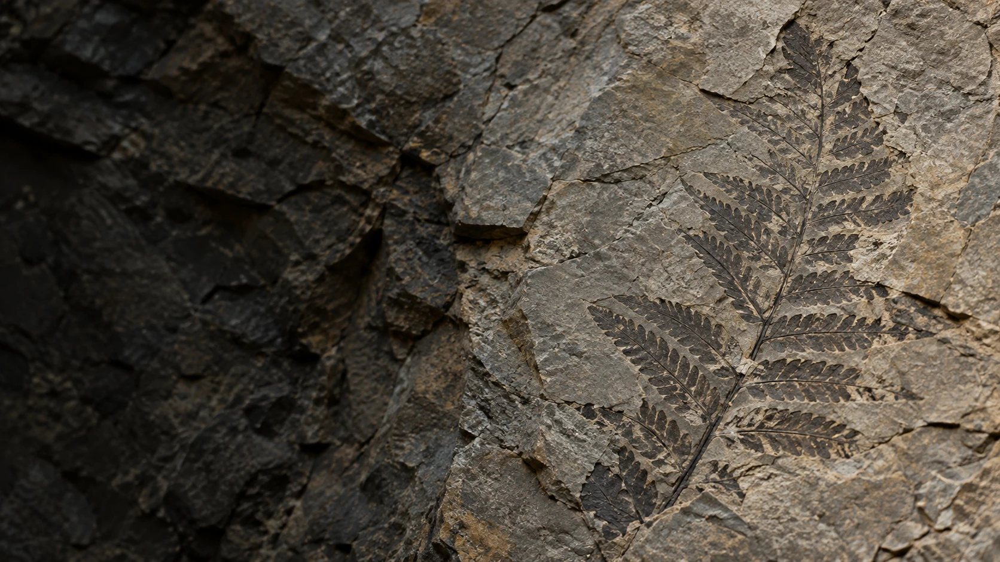
Fossilizar já é improvável. Ser encontrado é pedir ainda mais sorte.
Restos e vestígios precisam escapar da destruição. O soterramento por sedimentos é um dos caminhos para sua preservação.
Depois de milhões de anos, ainda precisam ficar expostos onde alguém possa encontrá-los.
É com esse arquivo incompleto que reconstruímos mundos inteiros.
Não é pouca informação. Só não é toda ela.
Eoraptor lunensis
Um animal reduzido ao que permaneceu.
Um esqueleto amplamente preservado, encontrado em Ischigualasto, revelou um pequeno dinossauro bípede.
Os ossos mostram proporções e articulações.
Não mostram a pele, a cor ou todos os detalhes que colocamos sobre o animal.
É aqui que evidência começa a encontrar interpretação.
Nota
Representação esquelética do projeto. A postura apresentada é uma reconstrução baseada na anatomia conhecida e não uma posição preservada em vida.
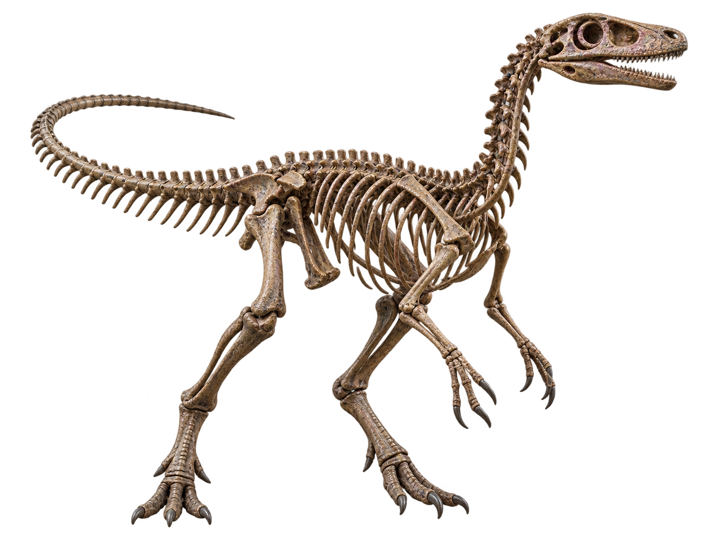
Ossos são evidência.
O animal completo é uma reconstrução.
Entre uma coisa e outra existem anatomia, comparação, hipóteses...
e espaço para estarmos errados.
EORAPTOR LUNENSIS
Sobre o Eoraptor
Um dos primeiros capítulos conhecidos da história dos dinossauros.
Há cerca de 230 milhões de anos, Eoraptor viveu onde hoje está o noroeste da Argentina.
Era pequeno e bípede. Sua anatomia ajuda a investigar as primeiras ramificações dos dinossauros.
Sua posição exata já mudou conforme novas análises foram feitas.
O fóssil permaneceu o mesmo.
Nossa interpretação, não.
Nota científica
Eoraptor já foi interpretado de maneiras diferentes dentro da árvore evolutiva dos dinossauros. Sua posição entre formas próximas à origem dos sauropodomorfos é atualmente bem sustentada por diversas análises, mas relações profundas entre os primeiros dinossauros continuam sendo investigadas.
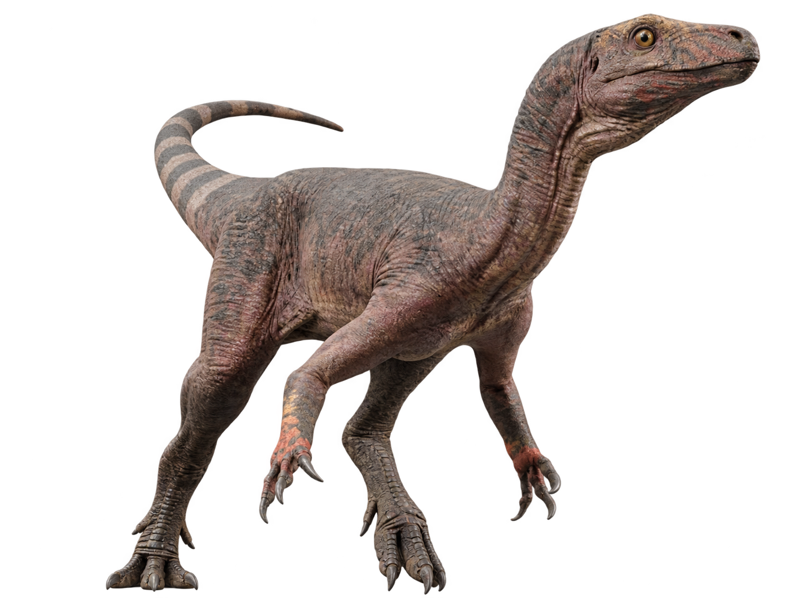
Tempo e local
- PERÍODO
- Triássico Superior
- IDADE
- ≈ 230 milhões de anos
- LOCALIDADE
- Formação Ischigualasto
San Juan · Argentina
Biologia
- LOCOMOÇÃO
- Bípede
- DIETA
- Incerta
- POSIÇÃO EVOLUTIVA
- Frequentemente recuperado entre os sauropodomorfos mais basais.
TAMANHO EM PERSPECTIVA
A palavra “dinossauro” faz a imaginação crescer.
O animal, nem sempre.
Eoraptor estava muito distante dos gigantes que apareceriam mais tarde na história dos dinossauros.
Nesta reconstrução, ele é mostrado com aproximadamente 1,2 metro de comprimento e 0,5 metro até o quadril, ao lado de uma pessoa de 1,70 metro.
Pequeno?
Comparado ao que viria depois, certamente.
Irrelevante é outra questão.
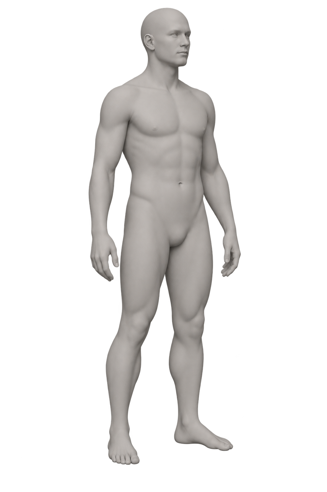
Comparação visual aproximada. O holótipo de Eoraptor foi originalmente descrito com cerca de 1 metro de comprimento. A medida de 1,2 m representa a escala adotada nesta reconstrução gráfica e não uma medição direta confirmada para todos os indivíduos da espécie.
≈ 201,4 MILHÕES DE ANOS
E então, as regras mudam outra vez.
O Triássico termina durante outra grande crise biológica.
Um episódio de extinção em massa coincide estreitamente com enorme atividade vulcânica associada à abertura inicial do Atlântico.
Os mecanismos ainda são investigados em detalhe.
O resultado, não.
Muitas linhagens desapareceram. Outras permaneceram.
A vida continuou novamente — não porque o mundo tivesse se tornado mais seguro, mas porque alguma coisa conseguiu sobreviver.
Aqui termina o Triássico.
O que acontece depois pertence ao próximo capítulo.
Jurássico · 201,4 milhões de anos atrás
O mundo seguiu.
Mas não do mesmo jeito.
A crise no fim do Triássico abriu um novo período. Os dinossauros que sobreviveram encontraram paisagens e possibilidades que mudariam por milhões de anos.
Uma continuação do mesmo planeta, não um recomeço.
Um planeta em movimento
O mapa deixa
de ser um só.
Pangeia começou a se fragmentar. Novas margens e mares alteraram as ligações entre regiões, sem que a mudança acontecesse de uma vez.
O continente se afasta devagar. A vida responde em seu próprio tempo.
Esquema de separação. As formas não são um mapa paleogeográfico.
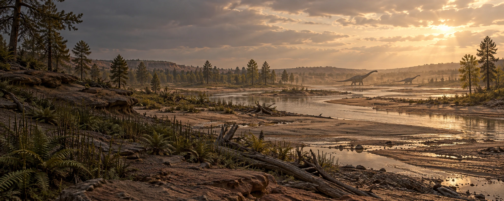
Jurássico tardio · oeste da América do Norte
O chão também
mudou de escala.
Na região registrada pela Formação Morrison, rios atravessavam planícies quentes. Samambaias, cavalinhas e coníferas cresciam em torno dos cursos d'água.
Reconstrução conceitual. Não retrata um lugar exato.
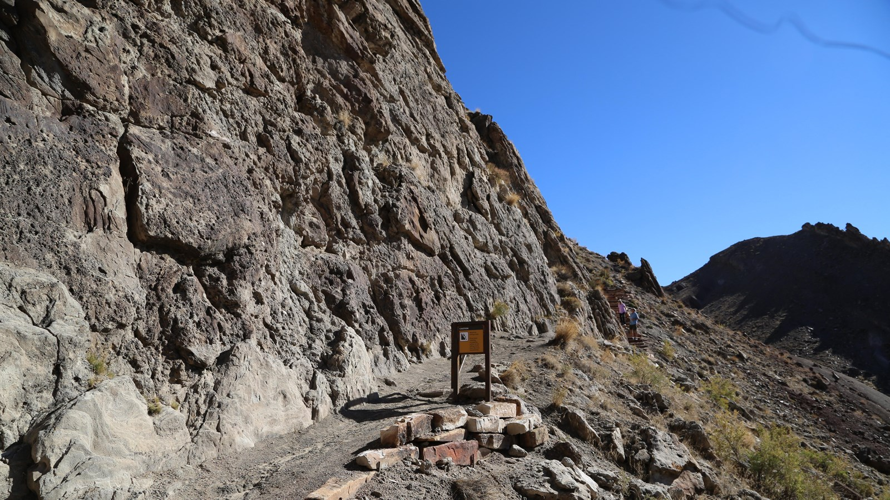
Oeste dos Estados Unidos · presente
A paisagem passou.
A rocha ficou.
Onde hoje se vê um afloramento, sedimentos de antigos rios guardaram vestígios do Jurássico tardio.
Esta foto mostra a formação no presente. A paisagem de 150 milhões de anos atrás precisa ser reconstruída a partir das camadas e dos fósseis.
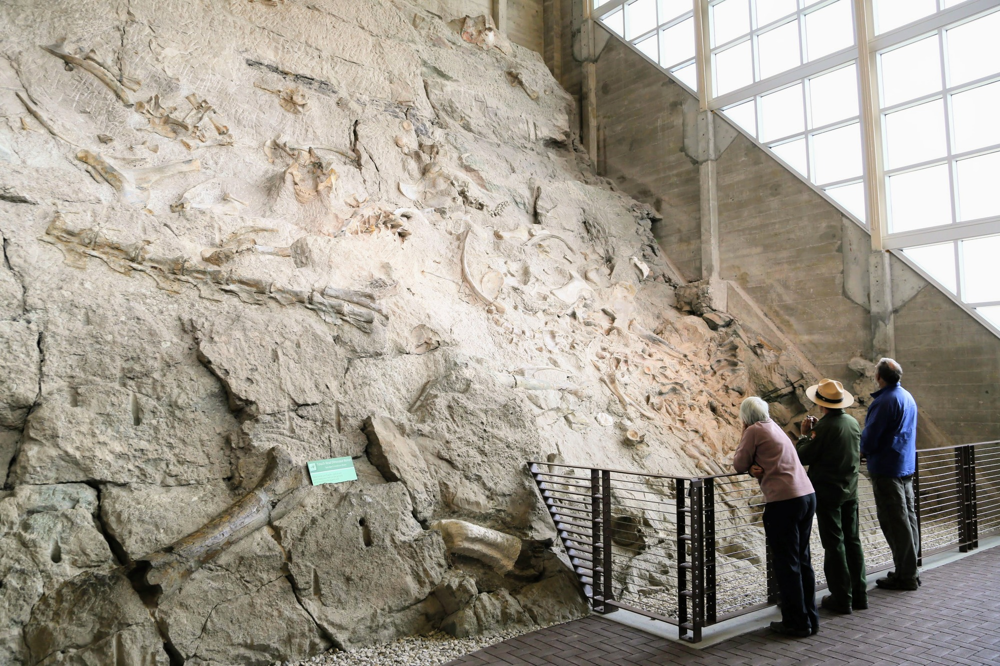
A evidência
Uma parede.
Muitas vidas.
A pedreira do Dinosaur National Monument conserva ossos de várias espécies. A disposição deles conta uma história de transporte, soterramento e preservação — não a pose de um único animal em vida.
Entre esses fósseis estão restos de Diplodocus.
Formação Morrison · Jurássico tardio
Primeiro, os ossos.
Os fósseis revelam o pescoço longo, a cauda extensa e as proporções do Diplodocus. É dessa estrutura que parte qualquer imagem do animal em vida.
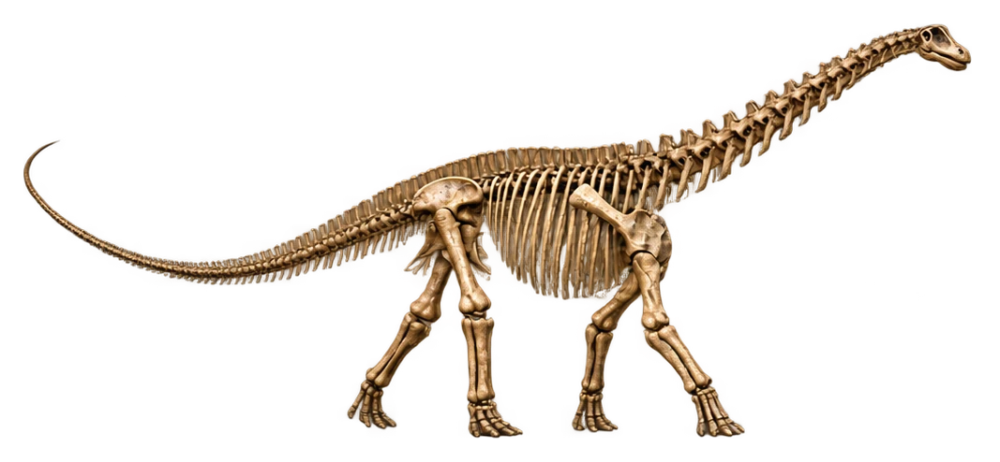
Representação esquelética interpretativa; não é um fóssil articulado em sua posição original.
Da evidência à interpretação
O corpo volta aos ossos.
A anatomia orienta a forma. Pele, cor e outros detalhes externos continuam reconstruídos.
Formação Morrison · Jurássico tardio
Diplodocus longus
O pescoço e a cauda ocupavam grande parte de um corpo de cerca de 24 metros.
Os fósseis mostram a estrutura; pele, cor e comportamento continuam sendo reconstruídos.
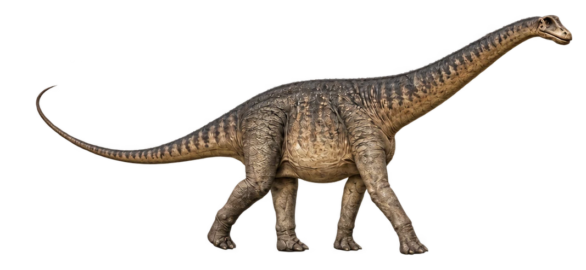
Tempo e local
- PERÍODO
- Jurássico tardio
- LOCALIDADE
- Formação Morrison
Biologia
- COMPRIMENTO
- ≈ 24 m comprimento de um adulto
- DIETA
- Herbívoro dieta inferida dos dentes e de sua anatomia
Reconstrução artística gerada para o projeto. Aparência externa hipotética.
Tamanho em perspectiva
Um humano.
Outra escala.
Uma reconstrução de Diplodocus longus com cerca de 24 metros de comprimento, ao lado de uma pessoa de 1,70 metro de altura.
As figuras usam a mesma escala. O comprimento acompanha o corpo, do focinho à ponta da cauda; a postura muda sua projeção na tela.
≈ 143,1 milhões de anos atrás
O Jurássico acaba.
A história, não.
A próxima fronteira geológica recebe outro nome: Cretáceo. Os dinossauros continuarão a mudar durante dezenas de milhões de anos.